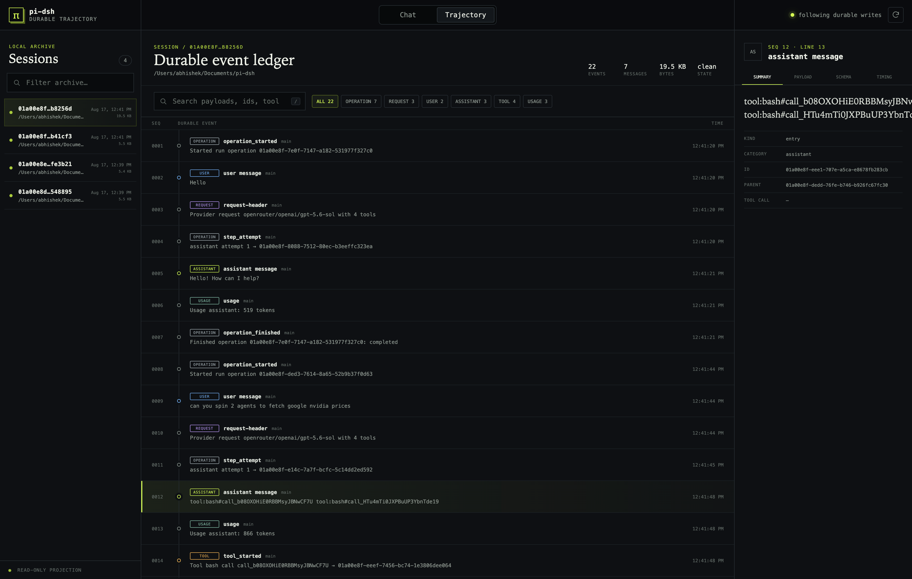

KEPT FROM PI
The behavior you already understand
- Pi’s
runAgentLoopand provider stream read,bash,edit, andwrite- Steering, follow-ups, abort, resume, and forks
- Pi v4 as the only durable session vocabulary
Experimental personal harness
pi-dsh keeps Pi’s small, readable coding-agent loop and four tools. It adds the part a long-running agent needs when the process dies: an fsynced event ledger, repair semantics, durable constraints, causal history, and human-approved runtime tools.
In plain English: the agent stays Pi; pi-dsh makes its work recoverable and explainable.
THE BOUNDARY
Pi still decides how a turn runs. pi-dsh owns what must survive and what can be inspected later.
KEPT FROM PI
runAgentLoop and provider streamread, bash, edit, and writeADDED BY PI-DSH
DELIBERATELY NOT
WHY THE ADAPTER EXISTS
The useful difference is not “more events.” It is what the runtime can prove after a crash, compaction, restart, or dynamic tool change.
A missing result is classified as NOT_STARTED or OUTCOME_UNKNOWN. Resume never invents success or blindly retries a side effect.
Compaction shadows a closed, tool-balanced prefix. The summary cites what it replaced; the append-only history stays inspectable.
Constraints are add/revoke events folded into every request, independent of transcript text and preserved across compaction and restart.
Search cold sessions, open bounded event windows, trace direct relationships, and cite evidence as stable sessionId:seq:line locations.
A small per-session component graph supports awaited disposal and idle-only replacement—without making the engine itself a plugin framework.
The model can define a tool, but a human approves the exact revision and source hash. Activation is process-local and never restored automatically.
READ-ONLY TRAJECTORY
Chat shows the model-visible projection. Trajectory shows requests, operations, tool checkpoints, usage, repairs, compaction, extensions, and causal links.

RUN IT
Requires Node.js 22.19+, npm, an OpenRouter-compatible key, and a model id.
$ git clone --recurse-submodules \
https://github.com/abhishekgahlot2/pi-dsh.git
$ cd pi-dsh && npm ci
$ cp .env.example .env
# Set PIDSH_MODEL and OPENROUTER_API_KEY
$ npm start
# In another terminal
$ npm run webApproved extension JavaScript is trusted local code. Worker threads and node:vm provide lifecycle cleanup and preemption; they do not make malicious code safe.